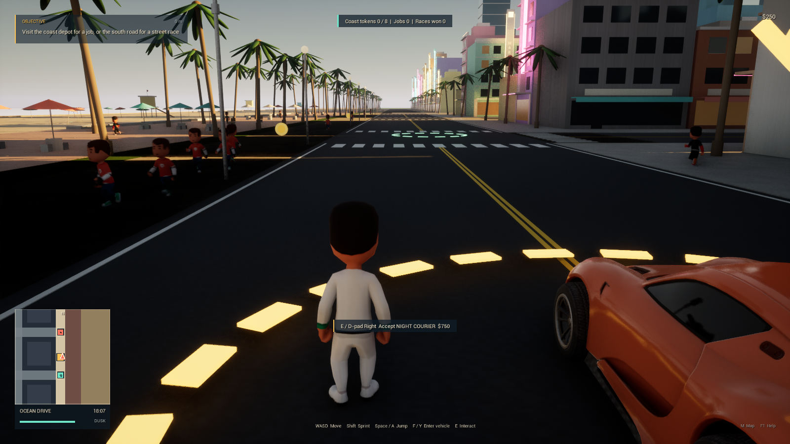
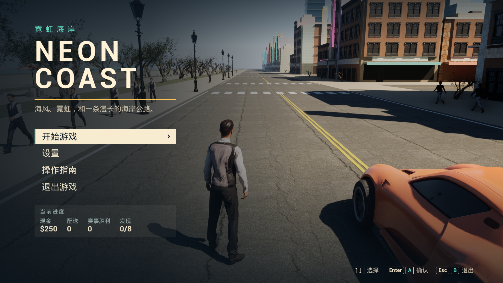
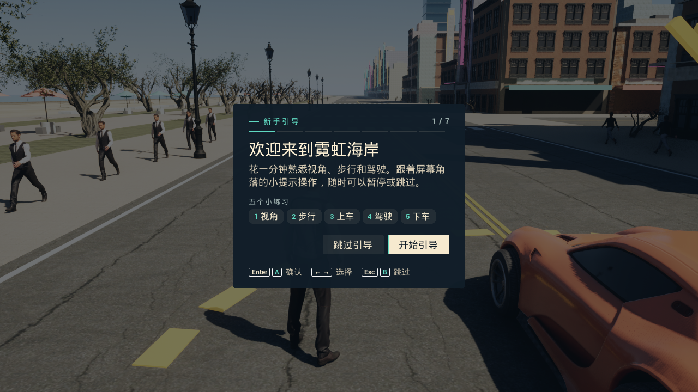
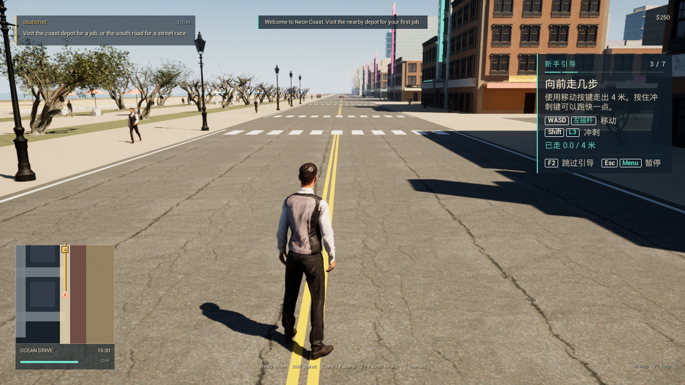
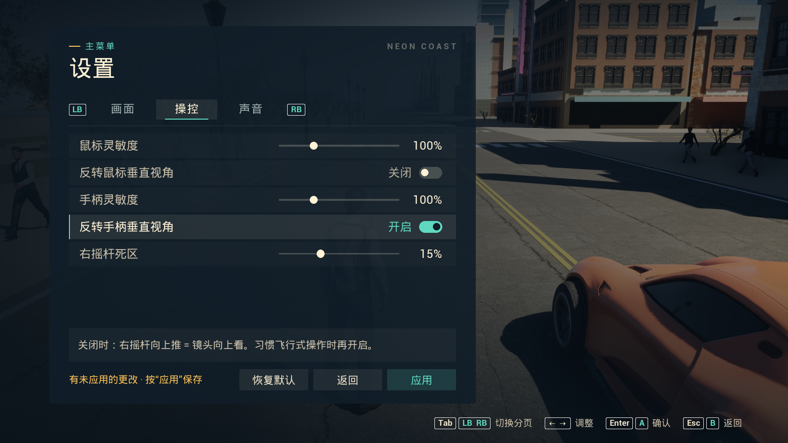

霓虹海岸 NEON COAST
海风、霓虹，和一条漫长的海岸公路。

一款基于 Unreal Engine 5.8.4 的原创海滨开放世界原型。离线单人，开车沿海岸兜风、接一单快递、跑一场街道赛，或者甩掉身后的警车。
DX12 · 无需安装 UE 编辑器、Python 或开发工具 · 开发状态
01游戏内容
开车、闲逛、接单，
或者被警车追。
在一段海岸街区里自由步行和驾驶。以下是 v0.4.1 实际包含的内容。
- 行人
- 64名
- 快递任务
- 3阶段
- 街道赛
- 8门
- 探索代币
- 8枚
-
驾驶
Chaos 四轮车辆物理，路上有交通车流。随时上下车，高速行驶时也能跳车；车辆会损坏，也可以维修。
-
行人与警方
主角与 64 名行人同在街头，行人会受惊、受击并作出反应。警车会展开追捕，失去视线后转入搜索。
-
任务与探索
三阶段原创快递任务、8 门街道赛，以及散落在海岸各处的 8 枚探索代币。
-
地图、照片与声音
地图与照片模式，昼夜交替；原创合成音频、电台和引擎声。
-
存档
保存游戏进度，退出时自动存档。更新安装会保留已有进度。
02实际画面
游戏里的样子
以下均为 v0.4.1 独立 Windows 程序的实际截图。点击可查看原图。


（打开原图）

（打开原图）

（打开原图）

（打开原图）03本次更新
v0.4.1 带来的变化
-
菜单声音
修复打开菜单后音乐与环境声随世界一起暂停的问题，并加入菜单专用声音。设置 → 声音可以试听当前已应用的音量。
-
启动即无边框
默认以桌面尺寸的无边框窗口启动。不需要时，可在设置 → 画面关闭“启动时自动无边框”。
-
中文新手引导
第一次开始游戏时，依次练习视角、步行、上车、驾驶和下车。F2 随时跳过，之后可在操作指南中重看。
-
键鼠与手柄
支持键盘鼠标和 Xbox 式手柄。实体手柄型号尚未单独验收。
操作指南
基本操作
- 移动 / 驾驶
- WASD
- 上下车 · 高速跳车
- F
- 交互
- E
- 地图
- M
- 暂停
- Esc
- 窗口 / 无边框切换
- F11
- 跳过新手引导
- F2
设置中可选择窗口、无边框或全屏，并分别反转鼠标与手柄的垂直视角。手柄按键与完整键位见游戏内操作指南。
04下载
下载 v0.4.1
Windows 桌面游戏，下载后在本机运行，不能在浏览器中游玩。
运行环境
- 系统
- Windows 10 2004 或更新版本 / Windows 11，64 位
- 图形
- DirectX 12
- 模式
- 离线单人
- 依赖
- 无需安装 Unreal Engine 编辑器、Python 或任何开发工具
- 签名
- 安装程序尚未进行商业代码签名，Windows 可能显示安全提示
已知问题
本机安装版启动检查中出现过一次 DX12 显卡超时（DXGI_ERROR_DEVICE_HUNG）。以相同方式重试的检查和随后两分钟的正常运行观察均已通过，但根因尚未查明，暂不能保证长时间游玩的稳定性。
05开发状态
一个仍在开发中的原型
NEON COAST 是独立的原创项目。它不是 GTA VI，也不是 Rockstar Games 的产品，与 Rockstar Games 没有任何关联。
尚未包含
- 联机多人
- 完整的室内场景
- 船舶与飞机
- 完整剧情
尚未单独验收
- 实体手柄型号
- 长时间游玩的稳定性
- 不同硬件上的性能